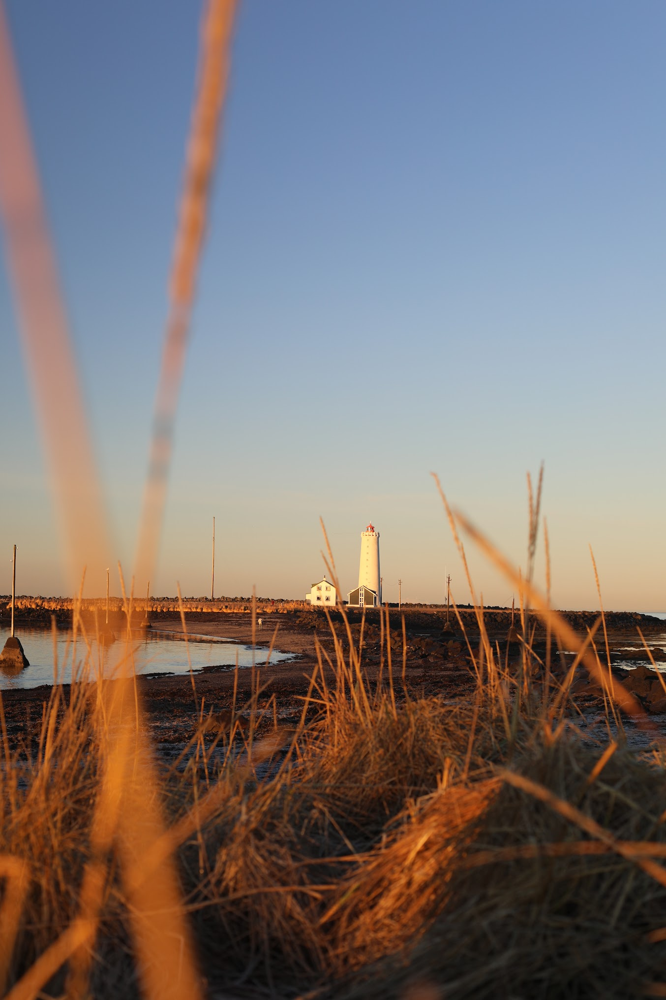
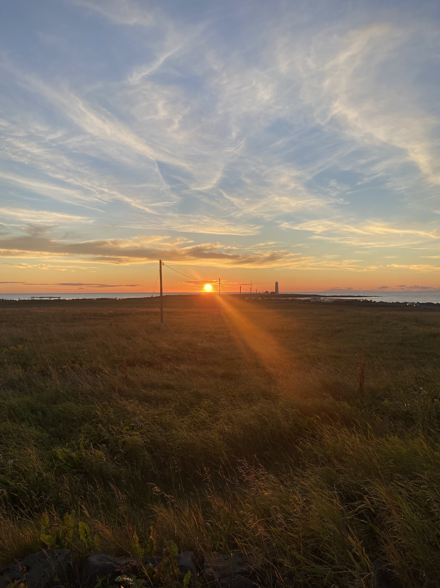

Welcome to Seltjarnarnes, the charming town on Iceland's westernmost peninsula, renowned for its beautiful landscapes, diverse birdlife, and breathtaking celestial displays. Our cosy, picturesque community is the perfect gateway to nature, adventure, and tranquillity, just minutes from the heart of Reykjavík.
Nestled on the edge of the Reykjavík Peninsula, Seltjarnarnes is a gem of a town that marries natural beauty, history, and modern comfort in a setting as breathtaking as it is serene. With a population of under 5,000, our cosy community thrives on the peninsula that extends into the cold Atlantic, offering unobstructed views of the ocean and the sky that can rarely be matched.

Seltjarnarnes is defined by the sea and the sky. On clear days, the Grótta Lighthouse at the peninsula's tip stands as a beautiful silhouette against the vast expanse of the blue Atlantic Ocean. As the day wanes, the westernmost point of the town becomes a front-row seat to some of the most stunning sunsets you'll ever witness, the sky ablaze with hues of red, orange, and pink.
As night falls, Seltjarnarnes' sky often becomes a theatre of celestial marvels. In the colder months, the Northern Lights – Aurora Borealis – put on a magical show that leaves spectators spellbound. The town's low light pollution and the panoramic view over the ocean make it one of the best places around Reykjavík to witness this spectacle.

But the charms of Seltjarnarnes are not just in its skies and seas. The land is just as captivating. Lush green spaces, picturesque trails, and diverse birdlife make it a haven for nature lovers. Birdwatchers will find their paradise at the Bakkatjörn pond, home to a myriad of bird species that find their home in this serene spot.For those who crave a bit of relaxation, the Kvika Foot Bath offers a unique experience, where visitors can soak their feet in a naturally warm pool, a creation of Icelandic artist Ólöf Nordal, and soak in the stunning vistas around. History buffs can delve into Iceland's past at the Nesstofa, a beautifully preserved 18th-century building, now a medical museum, once a residency for the country's leading physicians.
And if you're up for some fun, Seltjarnarnes won't disappoint. The town boasts a golf course with views so stunning, they might just distract you from your game! The Seltjarnarnes Swimming Pool is a local favourite spot to unwind and mingle with the friendly townsfolk. From food enthusiasts to avid adventurers, Seltjarnarnes offers something for everyone. For those who appreciate good food, Ráðagerði restaurant is known for its delicious dishes, made from locally sourced ingredients and served with a warm, Icelandic hospitality. We invite you to explore Seltjarnarnes, where nature and culture blend harmoniously, creating an environment that's just as warm and inviting as our people. Welcome to our little slice of heaven!
 Grótta Lighthouse
Grótta Lighthouse Northern Lights at Grótta
Northern Lights at Grótta Sunset at Grótta
Sunset at Grótta Birdlife
Birdlife Kvika Foot Bath (Cupstone)
Kvika Foot Bath (Cupstone) Bakkatjörn pond
Bakkatjörn pond Nesstofa
Nesstofa Golf course
Golf course Swimming pool
Swimming poolSeltjarnarnes is a small town located on a peninsula to the west of Reykjavík, the capital of Iceland.
Seltjarnarnes is easily accessible from Reykjavík. It's just a short drive (around 7-9 minutes) from the city centre. There are also public buses that run regularly between the two locations, bus number 11 goes from downtown Reykjavík to Seltjarnarnes. It takes about 40 minutes to walk from Reykjavík city centre to Grótta Lighthouse.
Seltjarnarnes is beautiful all year round. If you want to see the Northern Lights, the best time is between September and April. Summer offers milder weather and the Midnight Sun.
There are various activities to enjoy, such as visiting the Grótta lighthouse, bird watching at Bakkatjörn pond, golfing, swimming, exploring the Nesstofa museum, or simply enjoying the beautiful natural scenery.
Yes, Seltjarnarnes is a great place to watch the Northern Lights, particularly near Grótta lighthouse due to its low light pollution. However, sightings are weather-dependent and typically occur from September to April.
Grótta lighthouse is a landmark located on the tip of the Seltjarnarnes peninsula. It's a great spot for bird watching, and for viewing sunsets and the Northern Lights.
Bakkatjörn pond is a sanctuary for many bird species, particularly ducks, such as the Eider duck and various types of seagulls.
The Kvika Foot Bath is a geothermal footbath located in Seltjarnarnes. It was designed by Icelandic artist Ólöf Nordal and is a great spot to relax while enjoying the surrounding scenery.
Nesstofa is a historical building that houses a medical museum. Visitors can learn about the history of medicine in Iceland.
There are a few dining options, including the popular Ráðagerði restaurant which offers a menu of dishes made with locally-sourced ingredients.